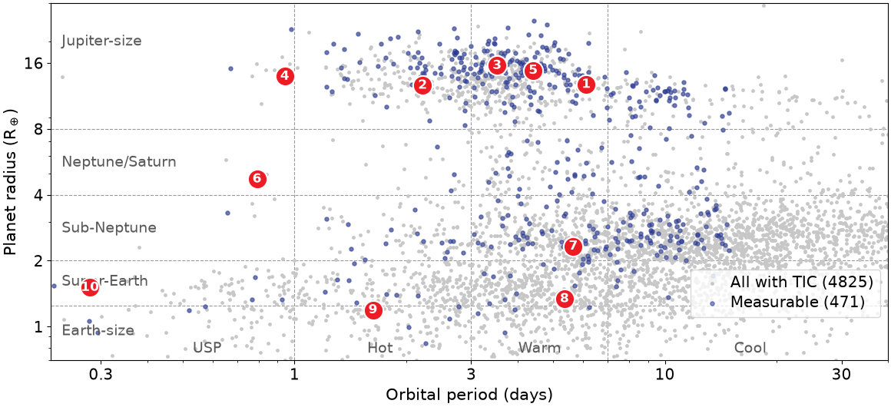
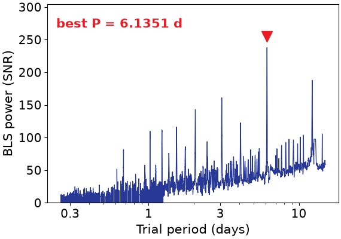
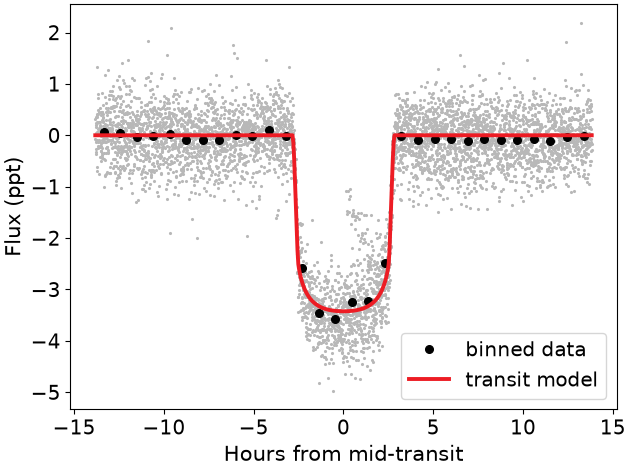
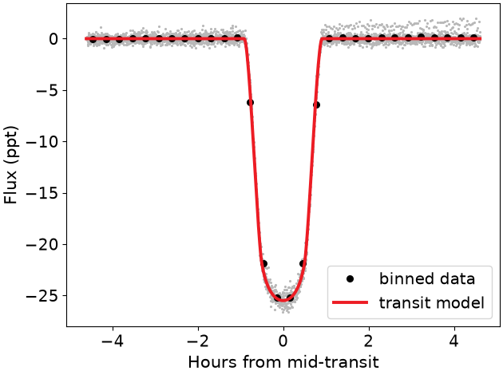
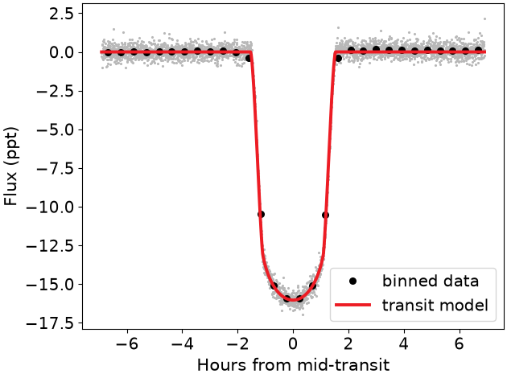
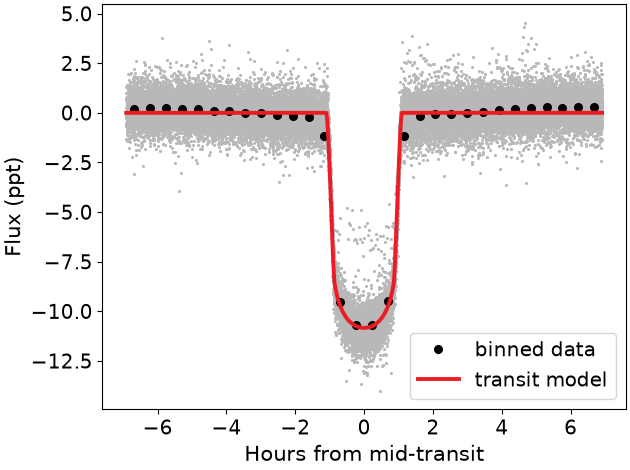
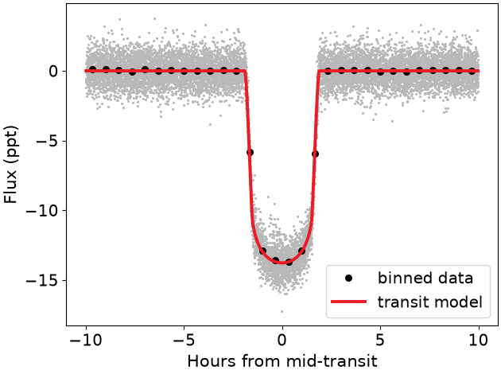
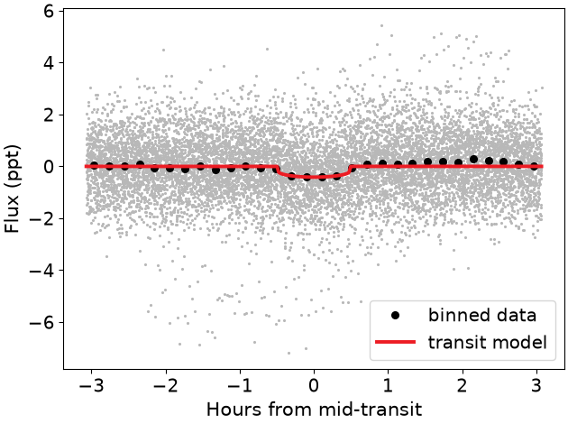
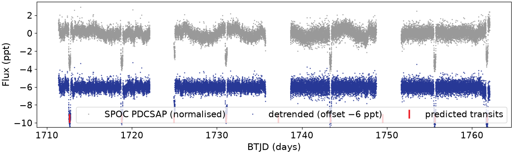

Measuring exoplanet radii and orbital periods with TESS
Ten planets, one pipeline: from public light curves to planet sizes, grouped by size, orbit, star, distance and sky position
Project: Space Observation Project 1, Group 2
Lecturer: Dr. Nguyen Thi Phuong
USTH, Master 2 Space, 25 November 2026
1 Introduction. What? One question, three checks
Period
All ten periods agree with the NASA Exoplanet Archive to 0.03 % or better.
Radius
Eight of ten radii agree within 4 %; the largest gap is 7.3 % (K2-141 b). Every gap is within 1.4σ.
Coverage
Ten planets from 1.1 to 15.7 R⊕ and 0.28 to 6.1 d, plus two stress tests that fail.
We measure; the catalog is only the answer key. A radius needs the stellar radius, which does not come from the light curve.
1 Introduction. Why? A transit gives a ratio, and the course formulas turn it into a size
2 Methods. Where? From 4,826 archive planets to ten
with TIC ID
complete entry
Tmag < 11
P < 15 d
depth > 500 ppm
S/N > 12
chosen
Estimated S/N: depth divided by a simple one-hour noise model scaled with Tmag and the number of transits per sector.
Source: NASA Exoplanet Archive, table pscomppars (TAP), transiting planets with a TIC identifier; light curves: TESS SPOC 2-minute PDCSAP from MAST.
2 Methods. Which? Six axes decide the representatives
| Axis | Classes |
|---|---|
| Size | Earth-size < 1.25 · Super-Earth < 2 · Sub-Neptune < 4 · Neptune/Saturn < 8 · Jupiter-size ≥ 8 R⊕ |
| Orbit | USP < 1 d · Hot 1 to 3 d · Warm 3 to 7 d · Cool 7 to 15 d |
| Star | M < 3900 K · K < 5200 K · G < 6000 K · F or hotter |
| Distance | Near < 50 pc · Mid 50 to 150 pc · Far > 150 pc |
| Sky | CVZ |β| > 78° · High 54 to 78° · Low < 54° (ecliptic latitude) |
| System | Single or multi-planet; found by TESS or before TESS |
2 Methods. Which? The ten planets span every size and orbit class

2 Methods. Which? Ten representatives and the group each one covers
| Planet | Size | Orbit | Star | pc | Sky | System |
|---|---|---|---|---|---|---|
| 1 HD 118203 b | Jupiter-size | Warm | G | 92 | High | Multi-planet |
| 2 HD 189733 b | Jupiter-size | Hot | K dwarf | 20 | Low | Single-planet |
| 3 HD 209458 b | Jupiter-size | Warm | F/hotter | 48 | Low | Single-planet |
| 4 WASP-18 b | Jupiter-size | USP | F/hotter | 123 | Low | Single-planet |
| 5 WASP-62 b | Jupiter-size | Warm | F/hotter | 176 | CVZ | Single-planet |
| 6 LTT 9779 b | Neptune/Saturn | USP | G | 80 | Low | Single-planet |
| 7 TOI-270 c | Sub-Neptune | Warm | M dwarf | 22 | High | Multi-planet |
| 8 LTT 1445 A b | Super-Earth | Warm | M dwarf | 7 | Low | Multi-planet |
| 9 GJ 1132 b | Earth-size | Hot | M dwarf | 13 | Low | Multi-planet |
| 10 K2-141 b | Super-Earth | USP | K dwarf | 62 | Low | Multi-planet |
2 Methods. How? The tutorial recipe, rebuilt with batman and emcee
SPOC PDCSAP
Savitzky-Golay
P, t0, depth
batman + emcee
radius
Same as the tutorial
Quick fits for TESS light curves: SPOC PDCSAP, remove NaNs and outliers, BLS, mask the transits, fit a limb-darkened model.
Our changes
PyMC3 and exoplanet replaced by batman and emcee (same Mandel-Agol model). Three detrending variants give a systematic error.
Radius
Light curve gives Rp/R★; R★ comes from the archive; total error adds MCMC, detrending and R★.
Search modes: blind = BLS over 0.26 to 15 d; guided = within ±3 % of the catalog period, durations scaled from the catalog duration (appendix A10).
2 Methods. How? BLS finds the period, the model fit finds the radius ratio


3 Results. Benchmark: HD 118203 b reproduces the tutorial

The radius gap is a stellar-radius effect: the catalog radius implies R★ = 2.10 R☉, the archive table lists 2.04.
3 Results. 1 HD 118203 b. Same planet as the tutorial: Rp/R★ within 0.2 %

| Measured | Catalog | Δ | |
|---|---|---|---|
| Period (d) | 6.13498 | 6.13498 | 0.0000% |
| Rp/R★ | 0.0553 | 0.0557 | -0.8% |
| Rp (R⊕) | 12.30 ± 0.35 | 12.78 | -3.8% |
7 transits, sectors 15, 16
3 Results. 2 HD 189733 b. Brightest star, 12 transits: Rp/R★ good to 0.4 %

| Measured | Catalog | Δ | |
|---|---|---|---|
| Period (d) | 2.21858 | 2.21858 | 0.0000% |
| Rp/R★ | 0.1541 | 0.1553 | -0.8% |
| Rp (R⊕) | 12.61 ± 0.18 | 12.67 | -0.5% |
12 transits, sectors 41
3 Results. 3 HD 209458 b. First transiting planet: radius within 1.0 %

| Measured | Catalog | Δ | |
|---|---|---|---|
| Period (d) | 3.52473 | 3.52475 | -0.0005% |
| Rp/R★ | 0.1212 | 0.1209 | +0.3% |
| Rp (R⊕) | 15.74 ± 0.27 | 15.58 | +1.0% |
8 transits, sectors 56
3 Results. 4 WASP-18 b. 22.6 h orbit, 97 transits: R★ limits the radius

| Measured | Catalog | Δ | |
|---|---|---|---|
| Period (d) | 0.94145 | 0.94145 | +0.0002% |
| Rp/R★ | 0.0986 | 0.1018 | -3.2% |
| Rp (R⊕) | 14.18 ± 0.66 | 13.90 | +2.0% |
97 transits, sectors 103, 104, 105, 106
3 Results. 5 WASP-62 b. Southern CVZ target: 4 of 38 sectors, radius within 0.1 %

| Measured | Catalog | Δ | |
|---|---|---|---|
| Period (d) | 4.41195 | 4.41195 | 0.0000% |
| Rp/R★ | 0.1104 | 0.1111 | -0.6% |
| Rp (R⊕) | 14.82 ± 0.97 | 14.80 | +0.1% |
22 transits, sectors 1, 2, 3, 4
3 Results. 6 LTT 9779 b. Hot-Neptune desert: b = 0.91 inflates the error to 13 %

| Measured | Catalog | Δ | |
|---|---|---|---|
| Period (d) | 0.79205 | 0.79205 | +0.0002% |
| Rp/R★ | 0.0440 | 0.0455 | -3.4% |
| Rp (R⊕) | 4.55 ± 0.59 | 4.72 | -3.6% |
34 transits, sectors 2
3 Results. 7 TOI-270 c. Sub-Neptune of an M dwarf: 2.38 R⊕ within 2.3 %

| Measured | Catalog | Δ | |
|---|---|---|---|
| Period (d) | 5.66023 | 5.66051 | -0.0049% |
| Rp/R★ | 0.0575 | 0.0560 | +2.7% |
| Rp (R⊕) | 2.38 ± 0.07 | 2.33 | +2.3% |
11 transits, sectors 3, 4, 5
3 Results. 8 LTT 1445 A b. Nearest system, 4 transits: 1.39 ± 0.12 R⊕

| Measured | Catalog | Δ | |
|---|---|---|---|
| Period (d) | 5.35904 | 5.35876 | +0.0051% |
| Rp/R★ | 0.0470 | 0.0454 | +3.5% |
| Rp (R⊕) | 1.39 ± 0.12 | 1.34 | +3.6% |
4 transits, sectors 4
3 Results. 9 GJ 1132 b. Earth-size planet from a 2.2 ppt dip: 1.14 ± 0.05 R⊕

| Measured | Catalog | Δ | |
|---|---|---|---|
| Period (d) | 1.62891 | 1.62893 | -0.0012% |
| Rp/R★ | 0.0474 | 0.0494 | -4.2% |
| Rp (R⊕) | 1.14 ± 0.05 | 1.19 | -4.1% |
26 transits, sectors 9, 10
3 Results. 10 K2-141 b. A 355 ppm dip every 6.7 h: radius 7 % low

| Measured | Catalog | Δ | |
|---|---|---|---|
| Period (d) | 0.28041 | 0.28032 | +0.0292% |
| Rp/R★ | 0.0188 | 0.0209 | -9.7% |
| Rp (R⊕) | 1.40 ± 0.10 | 1.51 | -7.3% |
57 transits, sectors 42
3 Results. Radii differ from the catalog by at most 7.3 %, periods by 0.03 %


3 Results. Summary of the ten measurements
| Planet | ΔP (ppm) | Rp measured (R⊕) | Rp catalog | ΔRp | Pull |
|---|---|---|---|---|---|
| 1 HD 118203 b | 0 | 12.30 ± 0.35 | 12.78 | -3.8% | -1.4σ |
| 2 HD 189733 b | 0 | 12.61 ± 0.18 | 12.67 | -0.5% | -0.3σ |
| 3 HD 209458 b | -5 | 15.74 ± 0.27 | 15.58 | +1.0% | +0.6σ |
| 4 WASP-18 b | +2 | 14.18 ± 0.66 | 13.90 | +2.0% | +0.4σ |
| 5 WASP-62 b | 0 | 14.82 ± 0.97 | 14.80 | +0.1% | +0.0σ |
| 6 LTT 9779 b | +2 | 4.55 ± 0.59 | 4.72 | -3.6% | -0.3σ |
| 7 TOI-270 c | -49 | 2.38 ± 0.07 | 2.33 | +2.3% | +0.8σ |
| 8 LTT 1445 A b | +51 | 1.39 ± 0.12 | 1.34 | +3.6% | +0.4σ |
| 9 GJ 1132 b | -12 | 1.14 ± 0.05 | 1.19 | -4.1% | -1.1σ |
| 10 K2-141 b | +292 | 1.40 ± 0.10 | 1.51 | -7.3% | -1.1σ |
4 Discussion. The stellar radius and the detrending set the error, not photon noise
| Planet | Rp/R★ MCMC % | Rp/R★ detrend % | R★ % | Total Rp % |
|---|---|---|---|---|
| 1 HD 118203 b | 0.5 | 2.4 | 1.5 | 2.9 |
| 2 HD 189733 b | 0.4 | 0.0 | 1.3 | 1.4 |
| 3 HD 209458 b | 0.3 | 0.1 | 1.7 | 1.7 |
| 4 WASP-18 b | 0.2 | 0.0 | 4.6 | 4.6 |
| 5 WASP-62 b | 0.4 | 0.1 | 6.5 | 6.5 |
| 6 LTT 9779 b | 6.1 | 11.5 | 0.6 | 13.1 |
| 7 TOI-270 c | 1.6 | 0.8 | 2.1 | 2.8 |
| 8 LTT 1445 A b | 5.2 | 0.5 | 7.0 | 8.7 |
| 9 GJ 1132 b | 2.2 | 1.2 | 3.1 | 4.0 |
| 10 K2-141 b | 6.3 | 2.2 | 2.6 | 7.2 |
4 Discussion. Where the method fails: three lessons
Blind search can lock on noise
K2-141 b: blind BLS gave 5.70 d instead of 0.280 d. The browser demo returns 2×P for LTT 1445 A b. Narrow the range (5 to 6 d, or 0.26 to 0.5 d) and both are fixed.
Active stars break detrending
AU Mic b (spots, flares): Rp/R★ = 0.25 ± 0.11 against 0.050. DS Tuc A b: systematic error ±0.12.
Few transits cap the accuracy
AU Mic b has 3 transits in one sector, with timing variations; LTT 1445 A b only 4. More sectors would help.
AU Mic b and DS Tuc A b are reported as failures and are not among the ten.
4 Discussion. Live demo: repeat the measurement in your browser

Steps
1 Pick a planet. 2 BLS searches the periods. 3 Fit the transit. 4 Compare with the NASA archive and with our MCMC.
Try
K2-141 b: set the BLS range to 0.26 to 0.5 d. LTT 1445 A b: 5 to 6 d.
Files: demo/index.html and notebooks/01_measure_one_planet.ipynb in this folder.
5 Conclusions and perspectives
What we showed
Periods of ten planets (0.28 to 6.1 d) within 0.03 % and radii (1.1 to 15.7 R⊕) within 4 % for eight of ten, from public data and one pipeline.
What limits it
Stellar radius (up to 7 %), detrending (about 1 %), the number of transits, and blind search at short periods or low S/N.
Next
Fit stellar density and eccentricity, search for TTVs, stack more sectors, Gaussian-process detrending for active stars.
A1 Appendix. Terms used in this talk
| Term | Meaning |
|---|---|
| TESS, sector | NASA survey satellite; it stares at one 24 by 96 degree field for about 27 days (a sector) |
| SPOC, PDCSAP | Science pipeline of TESS; flux after systematics removal (2-minute cadence) |
| TIC, Tmag | TESS Input Catalog identifier and TESS-band magnitude of the star |
| BLS | Box Least Squares: searches for periodic box-shaped dips |
| Rp/R★, b | Planet to star radius ratio; impact parameter (0 = central transit) |
| Limb darkening | The stellar disc is darker at the edge; it rounds the transit bottom (Kipping q1, q2) |
| USP, CVZ | Ultra-short period (P < 1 d); TESS continuous viewing zone (|ecliptic latitude| > 78°) |
| Pull | (measured − catalog) divided by our total 1σ error |
A2 Appendix. Data and what each source is used for
| Source | Access | Use |
|---|---|---|
| TESS SPOC 2-min light curves | MAST, lightkurve (PDCSAP flux) | The measurements: 1 to 4 consecutive sectors per planet |
| NASA Exoplanet Archive, pscomppars | TAP query, transiting planets | 4,826 planets: periods, radii, R★, Teff, distance, coordinates |
| TIC identifiers, Tmag | pscomppars columns | Cross-match to MAST; brightness cut |
| Course notes (M1 Exoplanets) | Lecture review, transit method | Formulas for depth, probability and duration (A6) |
| Tutorial: Quick fits for TESS light curves | exoplanet-case-studies | Recipe and benchmark values for HD 118203 b |
A3 Appendix. Sky map of the ten planets

A4 Appendix. Distance and host star

A5 Appendix. Light curve and detrending, HD 118203 b

A6 Appendix. Course formulas checked on the fitted orbits
| Planet | a/R★ (fit) | R★/a | T = (P/π)(R★/a) (h) | T catalog (h) |
|---|---|---|---|---|
| 1 HD 118203 b | 8.7 | 11.5 % | 5.40 | 5.64 |
| 2 HD 189733 b | 8.9 | 11.3 % | 1.91 | 1.82 |
| 3 HD 209458 b | 8.7 | 11.4 % | 3.08 | 3.07 |
| 4 WASP-18 b | 3.5 | 28.9 % | 2.08 | 2.21 |
| 5 WASP-62 b | 9.7 | 10.3 % | 3.46 | 3.82 |
| 6 LTT 9779 b | 3.9 | 25.7 % | 1.55 | 0.37 |
| 7 TOI-270 c | 27.6 | 3.6 % | 1.57 | 1.68 |
| 8 LTT 1445 A b | 28.5 | 3.5 % | 1.44 | 1.37 |
| 9 GJ 1132 b | 16.3 | 6.1 % | 0.76 | 0.77 |
| 10 K2-141 b | 2.1 | 47.2 % | 1.01 | 0.94 |
A7 Appendix. Formulas: transit model and period search
A8 Appendix. Formulas: radius and the error budget
Ratio errors come from the posterior (16th to 84th percentile) and from three detrending variants; R★ error from the archive.
A9 Appendix. Stress tests and failures
| Case | Setting | Outcome | Verdict |
|---|---|---|---|
| K2-141 b, blind | BLS 0.26 to 15 d | P = 5.70 d (truth 0.280 d); Rp = 21 R⊕ | Fixed by guided search |
| LTT 1445 A b, demo | Browser BLS 0.26 to 15 d | P = 10.55 d = 2×P | Range 5 to 6 d gives 5.35878 d |
| AU Mic b, guided | ±3 % of 8.46 d | P = 8.22 d, Rp/R★ = 0.25 ± 0.11 | Spots and flares; 3 transits; excluded |
| DS Tuc A b, guided | ±3 % of 8.14 d | Rp/R★ = 0.060 ± 0.121 | Detrending systematic too large; excluded |
First-pass JSON of the blind failures is kept in results_blind_failed/.
A10 Appendix. Search mode used for each planet
| Planet | Mode | BLS window |
|---|---|---|
| 1 HD 118203 b | blind | 0.26 to 15 d, 7 durations |
| 2 HD 189733 b | blind | 0.26 to 15 d, 7 durations |
| 3 HD 209458 b | blind | 0.26 to 15 d, 7 durations |
| 4 WASP-18 b | blind | 0.26 to 15 d, 7 durations |
| 5 WASP-62 b | blind | 0.26 to 15 d, 7 durations |
| 6 LTT 9779 b | guided | ±3 % of catalog P, durations 0.6 to 1.5 × catalog T |
| 7 TOI-270 c | blind | 0.26 to 15 d, 7 durations |
| 8 LTT 1445 A b | guided | ±3 % of catalog P, durations 0.6 to 1.5 × catalog T |
| 9 GJ 1132 b | blind | 0.26 to 15 d, 7 durations |
| 10 K2-141 b | guided | ±3 % of catalog P, durations 0.6 to 1.5 × catalog T |
A11 Appendix. References
- Ricker et al. 2015, TESS mission, JATIS 1, 014003
- Jenkins et al. 2016, SPOC pipeline, SPIE 9913
- Lightkurve Collaboration 2018, Lightkurve, ascl:1812.013
- Kovacs, Zucker and Mazeh 2002, BLS, A&A 391, 369
- Mandel and Agol 2002, transit light curves, ApJ 580, L171
- Kreidberg 2015, batman, PASP 127, 1161
- Foreman-Mackey et al. 2013, emcee, PASP 125, 306
- Kipping 2013, limb-darkening priors, MNRAS 435, 2152
- Akeson et al. 2013, NASA Exoplanet Archive, PASP 125, 989
- exoplanet-case-studies: Quick fits for TESS light curves and Fitting TESS data